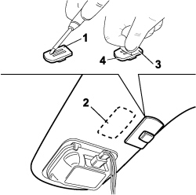

7065C69 INTERIOR REAR VIEW MIRROR PLATE - R.R.
- Path
- Procedures > 70 FITTINGS > 7065 SAFETY BELTS AND ACCESSORIES > 7065C ACCESSORIES AND DECORATIONS > 7065C69 INTERIOR REAR VIEW MIRROR PLATE - R.R.
- Kind
- repair procedure (removal / refitting; the operation number is the code)
- Applies to
- all engines; all production periods
- Interactive page
- https://sloeber94.github.io/elrnDB-fCrm/en/#/194001201
Applies to: all engines; all production periods
 Removing
Removing
 Refitting
RefittingThis procedure illustrates the refitting of the plate because, if correctly secured, the plate cannot be detached from the glass.
Applies to: all engines; all production periods
Refitting
Removing1. Remove any residues of adhesive from the plate and thoroughly degrease the surface of the plate that is in contact with the glass using disposable paper and heptane.
2. Remove any residues of adhesive from the windscreen and thoroughly degrease the surface of the glass that is in contact with the plate using disposable paper and heptane.
3. Apply a suitable length of double-sided tape to the plate (3M 4265, FASSON 450/460, DUPLOMONT 910 F LOHMANN).
4. Heat the plate to a temperature of 40-50 °C and place it on the windscreen, then exert a pressure of around 5 Kg/cm ² on it; wait for the plate too cool down to ambient temperature.

Applies to: all engines; all production periods